Hero de l'accueil : avant et après
« Avant » est la production relevée avant la correction, « après » la vraie production, déploiement 29393985 (code 7d12250b4). Captures WebKit, moteur de Safari, sans iPhone réel.
Les titres, prix et noms des captures « noms longs » sont des données de test, écrites pour éprouver la mise en page : ils ne sont pas publiés. Les autres captures montrent les données du moment, ce qui explique que le Flash et la météo changent entre avant et après.
Téléphone, 390 px
« Perpignan » n'est plus coupé, et le nom de la station s'aligne sur son logo.
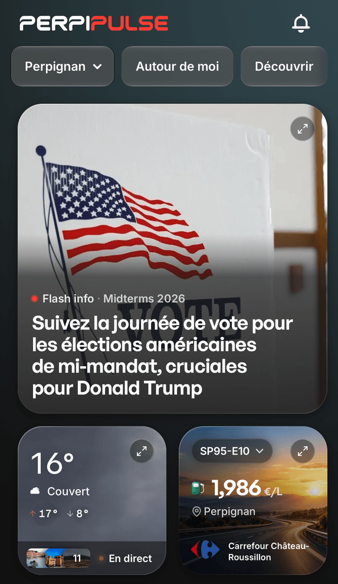

Petit téléphone, 320 px, noms longs (AC-22)
Avant, le prix disparaissait et le nom de la commune était coupé. Après, tout est lisible : la carte grandit.
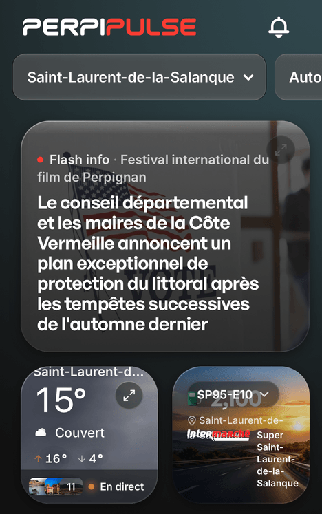

Position activée, 390 px
Le nom du lieu dans la carte Météo.
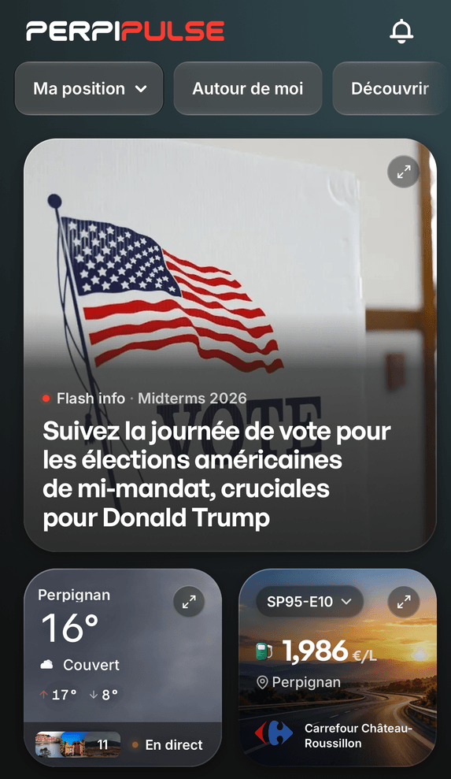
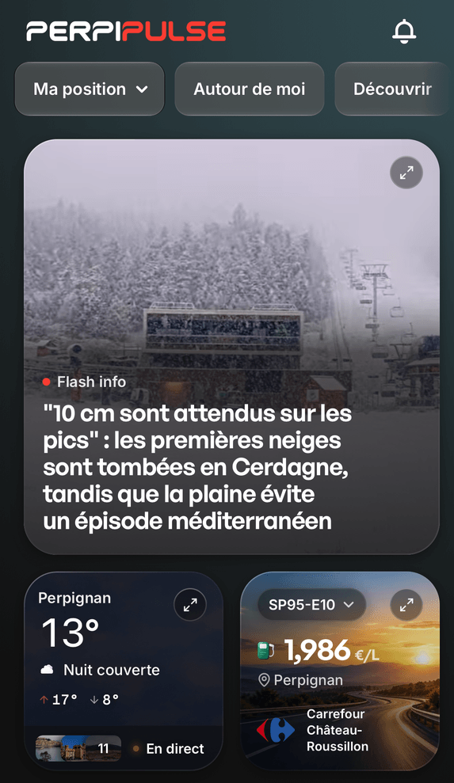
Texte agrandi à 150 %, 390 px
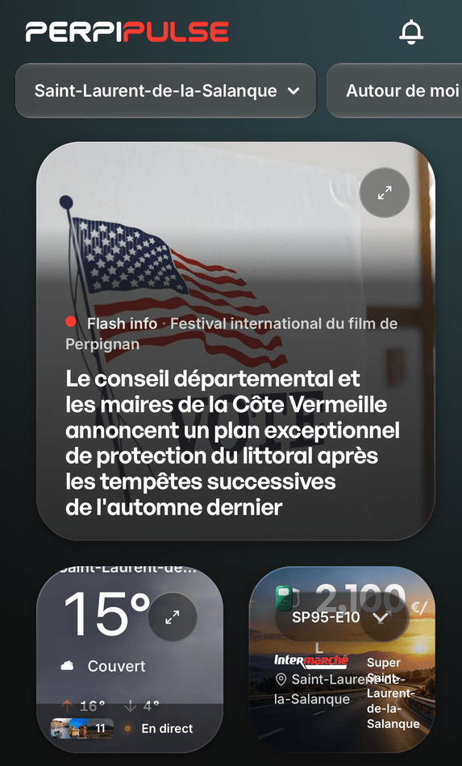
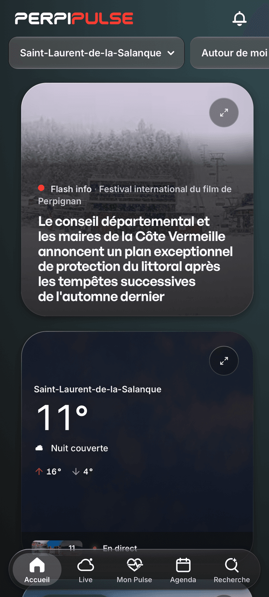
Tablette, 768 px, noms longs
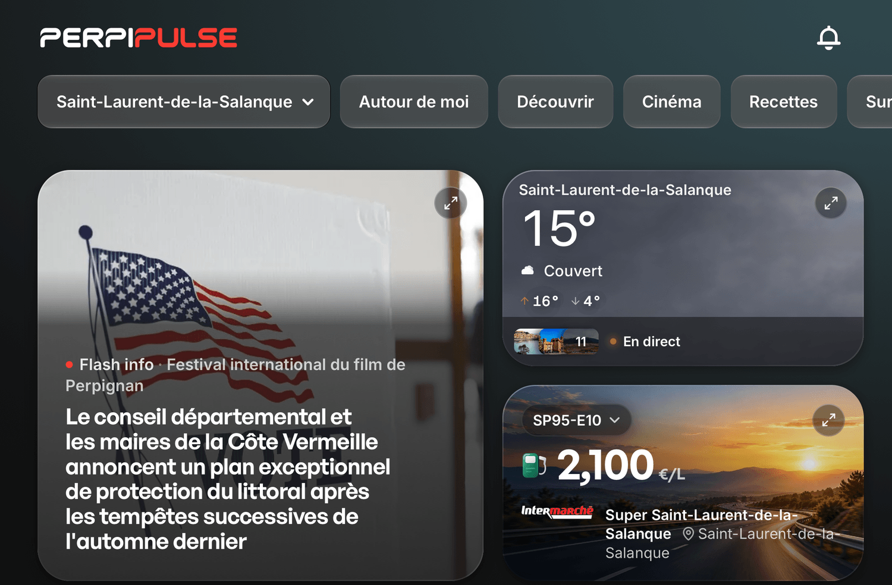
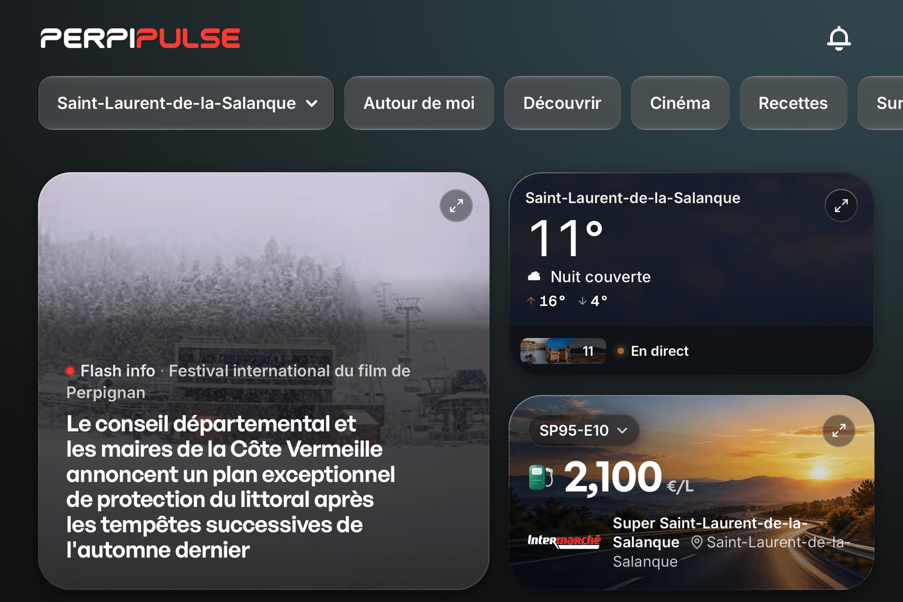
Ordinateur, 1 440 px
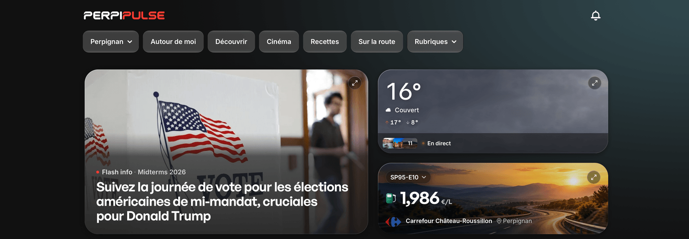

Le logo et le nom sur le même axe, 390 px
Vraies images de production, avec un nom d'enseigne de test. Le centre du logo et celui du nom coïncident au dixième de pixel pour Carrefour, E.Leclerc, BP et TotalEnergies. Le logo d'Intermarché porte lui-même le nom.
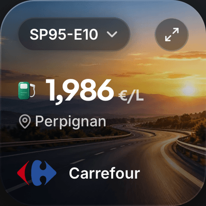
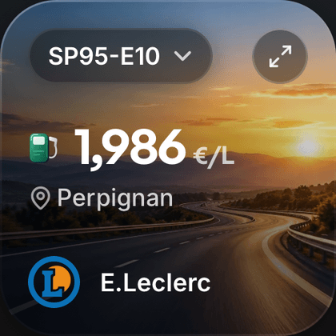
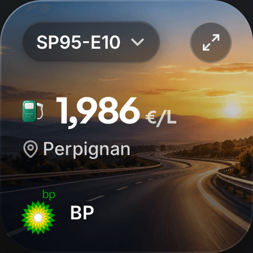
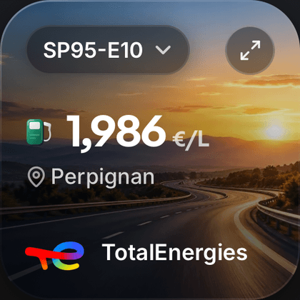
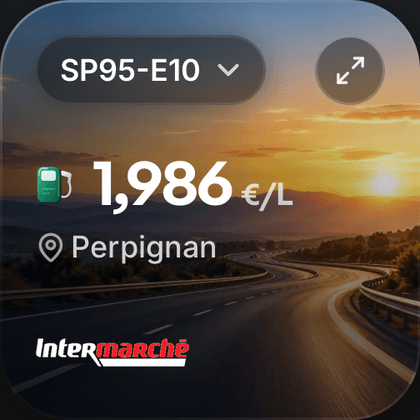
Les états sans données, 390 px (après)
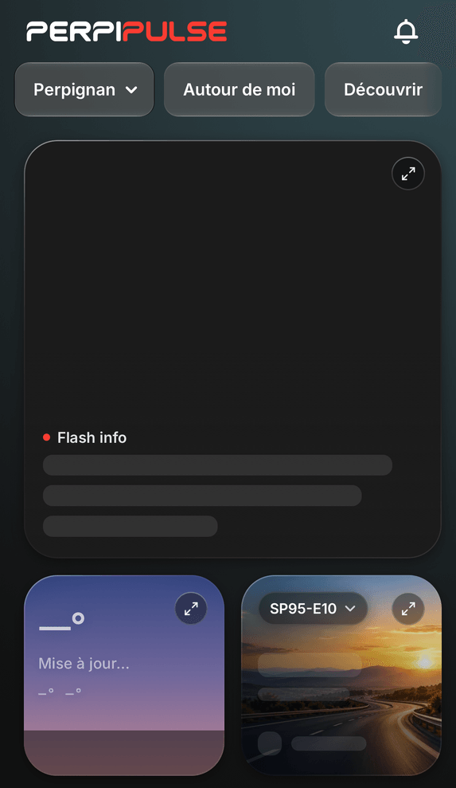
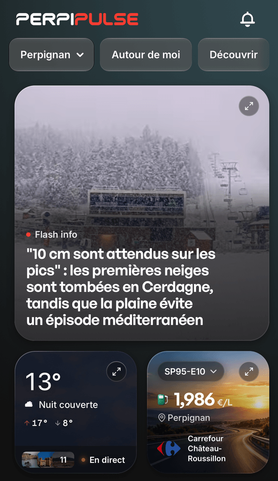
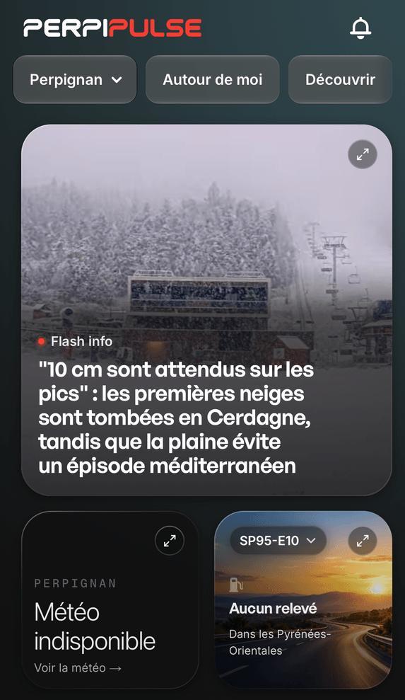
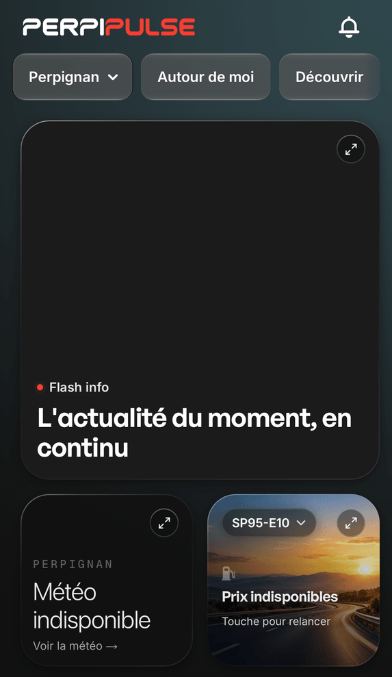
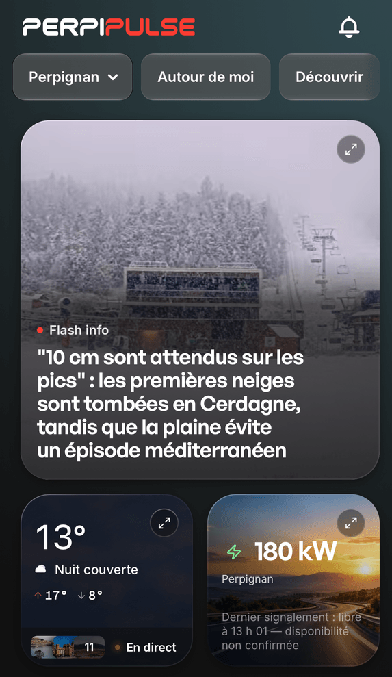